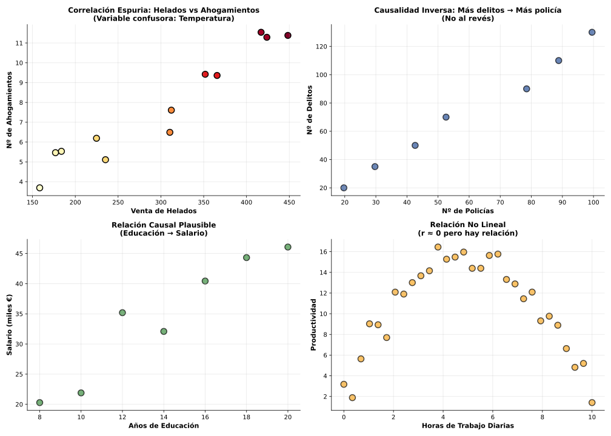

Tipos de relaciones entre variables correlacionadas:

Ej 1: Un estudio encuentra r = 0.88 entre "número de iglesias en una ciudad" y "número de bares". ¿Conclusión?
Correlación: Muy alta (0.88)
¿Causalidad? NO. Interpretaciones erróneas:
Variable confusora: Z = tamaño de población
Ej 2: Datos: r = 0.76 entre "horas de estudio semanal" y "nota en examen Matemáticas". ¿Es causalidad?
Probable CAUSALIDAD DIRECTA:
Posibles variables confusoras a considerar:
Conclusión: Muy probablemente causal, pero el efecto puede estar mediado o modulado por otros factores.
Ej 3 (Contexto Vigo): Correlación r = -0.82 entre:
¿Es la distancia la CAUSA del precio, o hay más factores?
Correlación observada: Alta y negativa (-0.82)
¿Causalidad directa? PARCIAL
Otras variables relevantes (confusoras o mediadoras):
Conclusión:
Lección metodológica: En fenómenos sociales/económicos, raramente hay UNA sola causa. Correlación alta sugiere relación real, pero el mecanismo suele ser multifactorial.
Ej 4 (Pensamiento crítico): Un artículo afirma: "Un estudio demuestra que personas que usan redes sociales >3h/día tienen 2× más depresión (r=0.65). Por tanto, limitar redes sociales curará la depresión."
Identificar todos los errores de razonamiento.
Errores identificados:
1. Confusión correlación-causalidad:
2. Variables confusoras ignoradas:
3. Relación bidireccional:
4. Conclusión no justificada:
Conclusión metodológicamente correcta:
"Existe asociación entre uso intensivo de redes sociales y depresión. Se necesitan estudios experimentales para determinar si es relación causal y en qué dirección."
Herramientas estadísticas para causalidad:
Regla de oro: Una correlación sugiere una hipótesis de causalidad, pero nunca la prueba por sí sola.